General Instructions
While you work through this tutorial, you will create an R Markdown (.Rmd) document. Markdown is a simple formatting syntax for authoring HTML, PDF, and Word documents that include R code and results.
It’s like magic: you save all your text and R code in a simple file; when you’re ready, push a button and it’s compiled into an output document with nicely formatted text, code (optional to include, but for this class you always will), and all the figures and tables generated by your code.
Since all the data analysis and results are automatically included in the compiled output document, your work is reproducible and it’s easy to re-do analysis if the data change, or if a mistake is uncovered. For more details on using R Markdown see http://rmarkdown.rstudio.com.
To create an Rmd file, you will have to work in RStudio (outside this tutorial environment). So, as you work on this tutorial, you will probably switch back and forth between the tutorial itself and a “real” RStudio session.
Logging in to RStudio
Go to http://rstudio.calvin.edu and enter your normal Calvin user name and password to log in.
Panels
When you open RStudio, you will see at least three different panels: The Console is on the left. On the upper right are Environment, History and maybe more; on the lower right are Files, Plots, and Packages. Explore a little to try to get familiar with them!
Files shows you the files saved in your personal space on the server. You can organize, upload, and delete files and folders.
Executing code in R
You can do things in R by typing commands in the Console panel; however, working that way makes it hard to keep a record of your work (and hard to redo things if anything changes or if a mistake was made). For this class, you will work in R markdown files, which can contain text, R code, and R output (such as figures).
After you have opened a file (like an RMarkdown file) on the RStudio server, the Console panel will be on the lower left and the newly opened file will be on the top left.
R Markdown files are stand-alone!
Every R Markdown file (Rmd file) must be completely stand-alone. It doesn’t share any information with the Console or the Environment that you see in your RStudio session. All R code that you need to do whatever you are trying to do must be included in the Rmd file itself!
For example, if you use the point-and-click user interface in the RStudio Environment tab to import a data file, the read-in dataset will not be available for use within your Rmd file.
Similarly, if you load a package by typing
library(mosaic)or
require(mosaic)in the Console window, mosaic functions and data will not be available to use within the Rmd file.
Keep your Rmd files stand-alone! (You have no choice, actually…)
Create an R Markdown file
In RStudio, navigate to File -> New File -> R Markdown…, or click on the white rectangle with a green + :
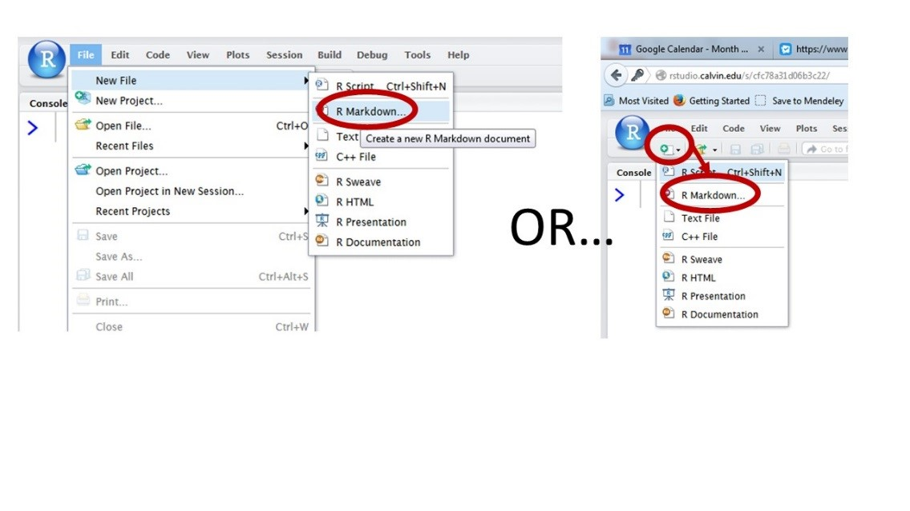
and select R Markdown from the drop-down menu.
Markdown Templates
Choose “From Template” and select the “STAT 145 Homework” template. (This template has all the basics pre-set to make it easy to complete homework and projects in RStudio.) In case you don’t see this option available, you can also select the “mosaic fancy” (which includes lots of examples to show you what Rmd can do) or “mosaic plain” (less boilerplate content) template.

Save your Rmd file
Save your file by clicking on the disk icon at the top of the file tab (maybe give it a useful file name like DeRuiterProject1.Rmd. Important: Avoid spaces and special characters in your file name). The file will be saved to the server, not to your computer. All your files will be accessible in the RStudio Files tab (lower right panel) whenever you log into RStudio, regardless of which computer you are using.
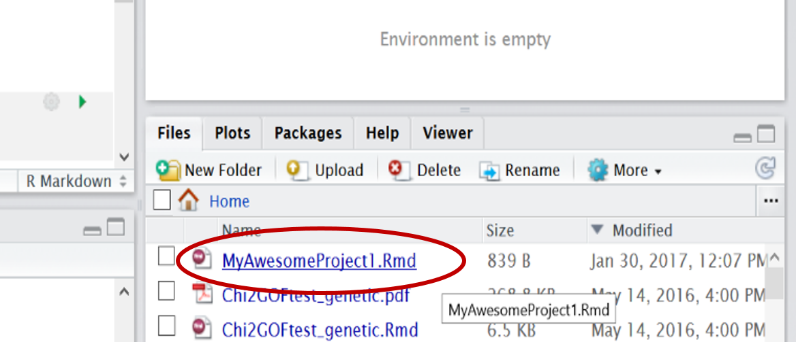
Downloading files from RStudio
However, you will have to download your files if you want a copy on your own computer, or to be able to upload a copy to Moodle to turn in. To download, go to the File tab, check the box for the file you want, then select More - Export. from the menu at the top of the File tab.
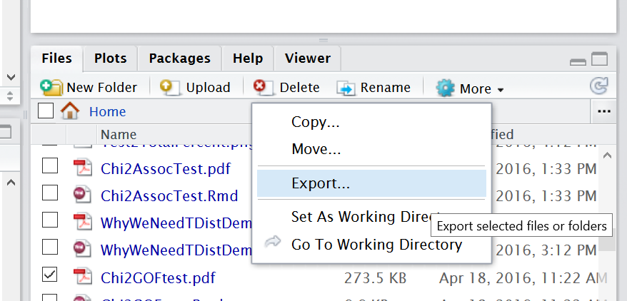
Knit!
How do Rmd files actually work? What’s so cool about them?
Click on the small black arrow next to the word “Knit” (and the ball of yard icon) at the top of the file window. Select “Knit to PDF”. Check out the compiled PDF result, and compare it to the original markdown file. Wow!
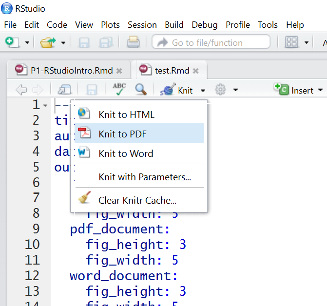
Personalize your Markdown file
At the top of the markdown file, enter an appropriate title, author(s), and date (within the quotation marks). Knit again to see the effect.
Make sure you do this for every assignment! (No prof likes getting homework from “A. Student” or “Your Name Here”…)
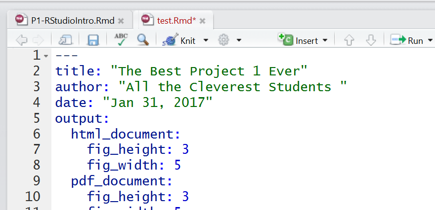
Rmd file anatomy: Text
The R Markdown file is a text file where you save all the R commands you want to use, plus any text commenting on the work you are doing and the results you get. Parts of the file with a plain white background are normal text.
You can format the text. For example, enclosing a word in asterisks will generate italics, so *my text* in the Rmd file will become my text in the PDF. Using two asterisks instead of one will generate boldface, so **my text** becomes my text. You can also make bulleted lists, numbered lists, section headers, and more. For example,
### Some Text
becomes
Some Text
(a sub-section header). Fewer hashtags make the text even larger, and more make it smaller.
Check out the R Markdown cheat sheet https://github.com/rstudio/cheatsheets/raw/master/rmarkdown-2.0.pdf for more examples.
For instructions on how to include R output and special characters (symbols, subscripts, etc.) in your text, see the document in the “Links and Resources” section of the course Moodle site.
Before moving on, try a few of the tricks you just learned in your Rmd file. Make it pretty!
Rmd file anatomy: R code chunks
An Rmd file can also contain one or more R code chunks. These sections of the file have a grey background onscreen. Each one begins with
```{r}
and ends with
```
like so:
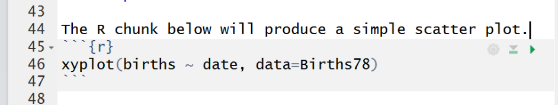
How to add a new R code chunk to your file
To add a code chunk to your file, you can type in the header and footer by hand to start and end the chunk. Or, you can click on the green box with the C inside (at the top of the Rmd file) to insert an empty chunk. When you click the Knit button a document will be generated that includes both text content as well as the output of any embedded R code chunks within the document.
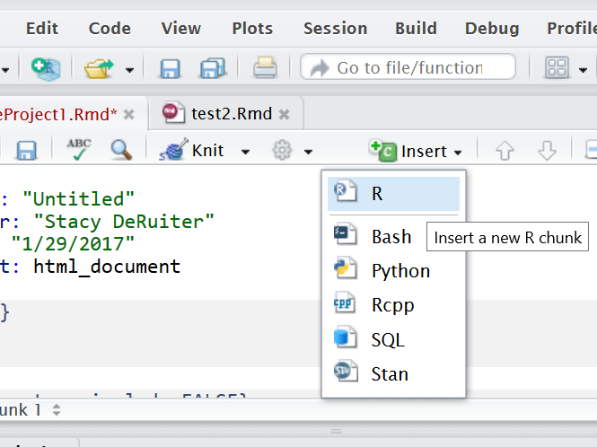
Setup Chunk
The first R code chunk in a Rmd file is usually used to specify settings. In this chunk, you can also give R permission to use certain packages (software toolkits) with
library(packagename) Alternatively,
require(packagename)does the same thing.
For example, we will almost always use the mosaic package. So, verify that the first R code chunk in your file includes the line library(mosaic) or require(mosaic) (both options work equally well).
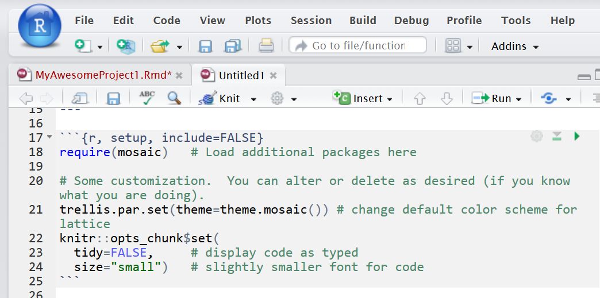
The settings chunk is invisible!
If you look carefully at the PDF output, you will see that the settings chunk does not appear there. That’s intentional - for homework, you don’t need to show me what settings you used, although I would always like the R code you use to solve problems to show up in the output PDF.
Making R code invisible in the PDF
Going back to the Rmd file, look at the header of the settings chunk – this is the part between the {curly braces}. Notice that in addition to the required “r” label, which is followed by an (optional) chunk name, the option
include=FALSE
appears, which is what makes the code from this chunk invisible in your compiled output document.
Please do not use this option for the R code you use to make calculations in your projects and homework. I want to see exactly what code you used to get your results!
Are there other options I can set?
You can add other options for R chunks (we will learn about some more choices later) and they should all be separated by commas. You can control things like what is included in the output PDF and how big figures are in the PDF. For this class, the defaults defined in the mosaic plain and fancy templates will work well most of the time.
If interested, see https://www.rstudio.com/wp-content/uploads/2016/03/rmarkdown-cheatsheet-2.0.pdf or http://www.rstudio.com/wp-content/uploads/2015/03/rmarkdown-reference.pdf.
Clean Up
At this point, you probably want to get rid of all the extra content in the template.
Delete everything in the file that comes after the settings R code chunk.
Now the clutter is gone and you have space to include your own R code and text.
Running R Code from an Rmd file: Knit the file
There are multiple ways to run and test R code from a markdown file. Sometimes you want to knit the whole file and get the PDF or HTML; other times you want to run just a specific bit of code to make sure it’s working correctly.
Every time you knit the file, all R code will be run automatically.
A side note: PDF or HTML? Which is preferable?
I think PDFs are a little more portable and a good default option, and their formatting is best for anything you are going to print out to hand in – it will look nicer and the same content will take up fewer pages.
However, later in the semester we will see how to create some pretty cool interactive graphics in R, and these can only be rendered in HTML. For this class, you can use either one.
Running Code from an Rmd file: Copy and Paste
Finally, here’s a third way to use shortcuts/buttons (option 3):
Copy the code you want to run, paste to the console window, and hit Enter.
(Or on Windows, place your cursor in the line you want to run and hit ctrl + enter.)
R Markdown files stand alone
We already covered this once, but we’re covering it again because it’s one of the most common student mistakes in Rmd files!
If you run R code in the console or the RStudio GUI (for example, reading in a data set by pasting code into the console or using the Import Dataset button in the Environment tab), you won’t be able to use the results in your markdown file. Any and all commands you need, including reading in data, need to be included in the file.
The reverse is also true. If you run just one R code chunk in an Rmd file using the “run” buttons mentioned above, or by copy-pasting into the console, you are effectively running that code in the console. If R gives an error saying it cannot find a certain variable or dataset, the most likely fix is to run the preceding code chunks before the one you’re stuck on.
Reading in a data file stored online
You can load online datafiles in .csv format into R using the function read.csv(). The input to read.csv() is the full url where the file is located, in quotation marks. (Single or double quotes – it doesn’t matter which you choose, as they are equivalent in R.)
For example, we will consider a dataset with counts of the numbers of birds of different species seen at different locations in Hawai’i. It is stored at http://sldr.netlify.com/data/hawaii_birds.csv, and can be read into R using the command below.
hi_birds <- read.csv('http://sldr.netlify.com/data/hawaii_birds.csv')When you read in data, store it to a named object
Note that we didn’t just run the read.csv() function – we assigned the results a name so that instead of printing the data table to the screen, R stores the dataset for later use.
hi_birds <- read.csv('http://sldr.netlify.com/data/hawaii_birds.csv')Here, we assigned the name hi_birds to the dataset using an “assignment arrow” <- (the “arrow” points from the object toward the name).
Reading in data from Google Sheets
There’s also a simple way to read in data from a Google Sheet.
First, go to the Google Sheet online to prepare it by “publishing it online”.
In the File menu, choose “Publish to the Web”:
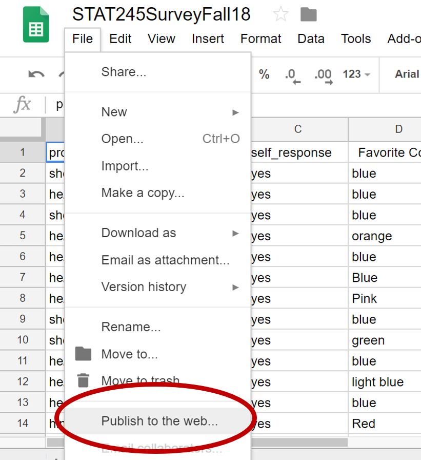
In the pop-up window, choose to publish your “Entire Document” as a .csv file:
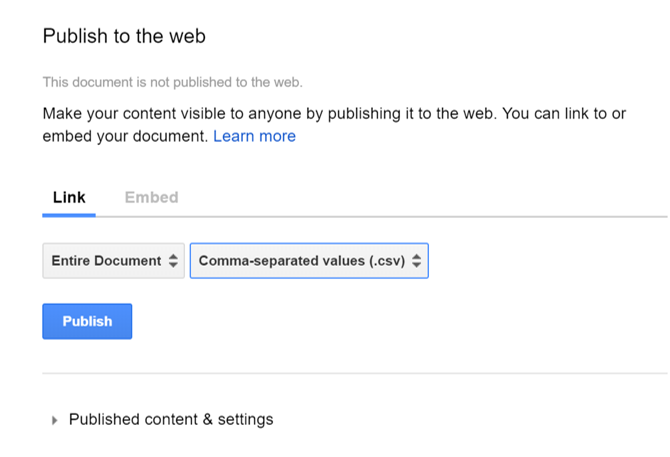
Finally, copy the resulting link.
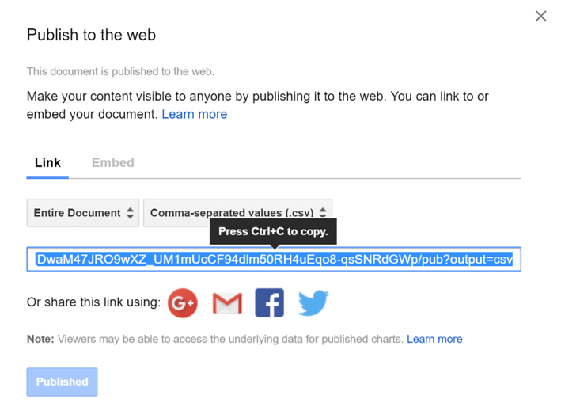
You can use read.csv() with this link as input to read your data into R.
A few (very) basic R functions
After reading the data in, you can use R functions to have a look at it, for example:
head(hi_birds)
glimpse(hi_birds)
nrow(hi_birds)Try each of the lines of code above in R. What do the functions head(), glimpse(), and nrow() do? Try to figure it out based on the output they produce.
If you get stuck, consult R’s built-in help files. Remember, you can access the help for a function by running the code ?functionName – for example, if you want help on head(), run:
?headReading in a local data file
You can also upload your own data file to the server, and then read it in to R using read.csv. The basic process is:
- Use spreadsheet software to create the data table
- Save the file as a csv file.
- Upload the csv file to the RStudio server
- Use the
read.csv()function to read the file into R
Tips for formatting a data table
Your data table should have one row per observation (or “case”) – the people, animals, places, or things about which data have been collected.
There should be one column for each variable observed. Choose short but informative names for your variables (and the values they can take on), and avoid using any special symbols or spaces in the names.
Create your own data table
Next you will use any spreadsheet software (Excel, Google Sheets, etc. - your choice) to create a simple data file. For this exercise, we will use some data which represent a random sample of 25 records from the dataset HELPrct from the mosaic package; use the command
?HELPrctif you want more info on the dataset as a whole. A brief description of the data is as follows:
Researchers collected survey data from people participating in substance-abuse treatment programs. Among many other things, they recorded whether each person was homeless or housed, and also the main substance to which they were addicted (alcohol, cocaine, or heroin, in this study). Of the 25 people in our subsample, 14 were homeless, and of these 6 used alcohol, 3 cocaine, and 5 heroin. Among the 11 housed people, 1 used alcohol, 7 cocaine, and 3 heroin.
Enter these data points into your spreadsheet using the “tips” given previously for data-table formatting. When you are happy with your table, save it in CSV (comma separated values) format.
Uploading a file to RStudio
Go to the Files tab in RStudio (lower right). Click Upload and browse to select the file you created. Then, use the read.csv() function to read in the file. Remember to put the file name in quotes, and use <- to assign a name to the dataset! Note that if you made folders in your Files tab and stored the csv file inside one of them, you will have to include the relative path from your Rmd file to your data file, e.g., “myfolder/myfilename.csv”.)
A note about printing
When you knit a Rmd file, it will probably automatically open in RStudio’s built-in PDF pre-viewer. If you print from there, it will look awful (blurry). But when you knit, a PDF of the output is also saved in your Files tab. If you go to the Files tab and double click the PDF, it should open in your computer’s normal PDF viewer and you can print it from there…and it will look good.